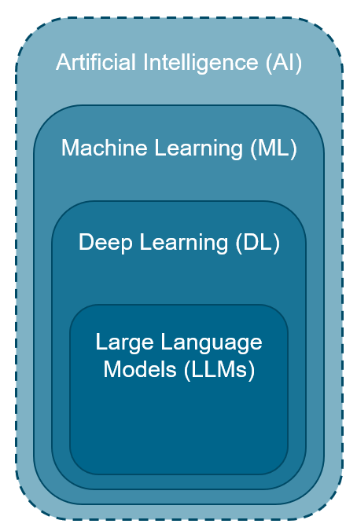
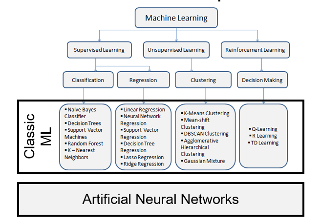
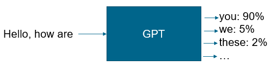
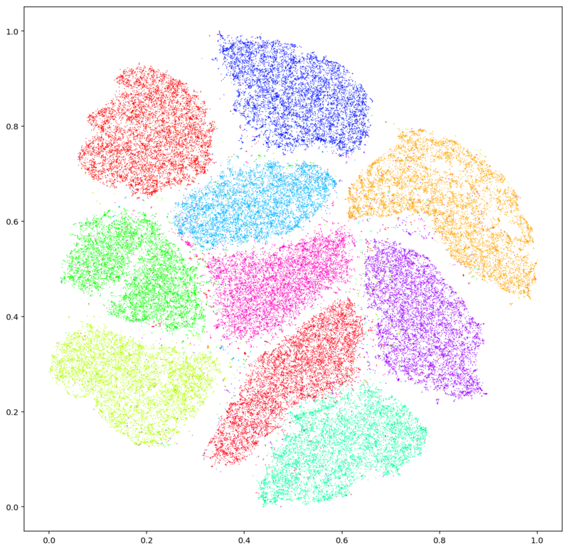

Grundlagen#
Allgemeine Begriffe#
Begriffe im Bereich KI werden oft vermischt.
Künstliche Intelligenz: Definition unklar
Maschinelles Lernen: Zusammenhänge werden automatisiert aus Daten extrahiert.
Alternative: Symbolische und regelbasierte KI
Deep Learning: ML mit tiefen neuronalen Netzen. Heute vorherschendes Paradigma.
Alternative: Klassische ML Methoden, z.B: Regression, Decision Trees, …
Large Language Models: Sprachmodelle auf Basis der Transformer-Architektur (GPT, Llama, Mistral, …)

Maschinelles Lernen#

Supervised Learning#
Trainingsdaten sind Feature-Value Paare \((X^{(i)}, y^{(i)}), X_i \in F, y_i \in L\)
\(F\) ist der Raum von Eigenschaften, die Instanzen \(X\) beschreiben, z.B. Alter, Einkommen, …
\(L\) sind Kategorien oder Werte, die mit jeder Eingabe \(X\) assoziiert sind, z.B. “kauft_produkt” (ja, nein).
Ziel: Lernen einer Funktion \(f: F \rightarrow L\), die unbekannten Dateninstanzen \(k\) eine Kategorie / einen Wert zuordnet: \(f(x_1^{(k)}, x_2^{(k)}, ..., x_n^{(k)}) = y^{(k)}\)
Einfaches Beispiel: Regressionsanalyse
Komplexeres Beispiel: Textvervollständigung 
Unsupervised Learning#
Erkennen von Mustern in Datenräumen.
Eingaben sind Dateninstanzen \(X_i \in F\)
Beispiel Clusteranalyse 
Unterschiede zwischen traditionellen und ML-basierten Softwaresystemen#
Traditionelle Softwaresysteme 🔌
Codegetrieben.
Deterministisch: Input-Output Verhalten durch Code gesteuert.
Formale Methoden zur Programmverifikation, z.B. Model Checking.
Anforderungen definieren Testfälle.
ML-basierte Softwaresysteme 📊
Datengetrieben.
Nicht-deterministisch: Systemausgaben sind viel weniger vorhersagbar.
Formale Garantien zum Systemverhalten sind sehr schwierig. Wenn überhaupt oft nur “Error ranges”.
Datengetriebenes Testen.